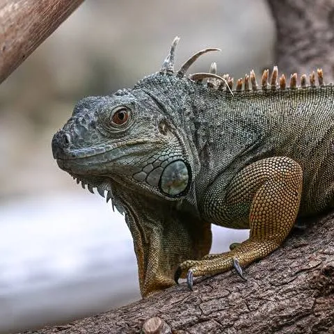

Hello! I am Gavin, a graduate student at the University of Waterloo.
The University of Waterloo is a public research university with a main campus in Waterloo, Ontario, Canada. It offers a wide range of undergraduate and graduate programs in various fields including engineering, mathematics, and computer science.
As a graduate student, I am pursuing advanced studies and research in my field of interest.
I enjoy learning new things and exploring different areas of technology and science.
Here's an image of an iguana:
Iguanas are fascinating reptiles known for their vibrant colors and unique behaviors. They are native to tropical areas of Central and South America and the Caribbean.